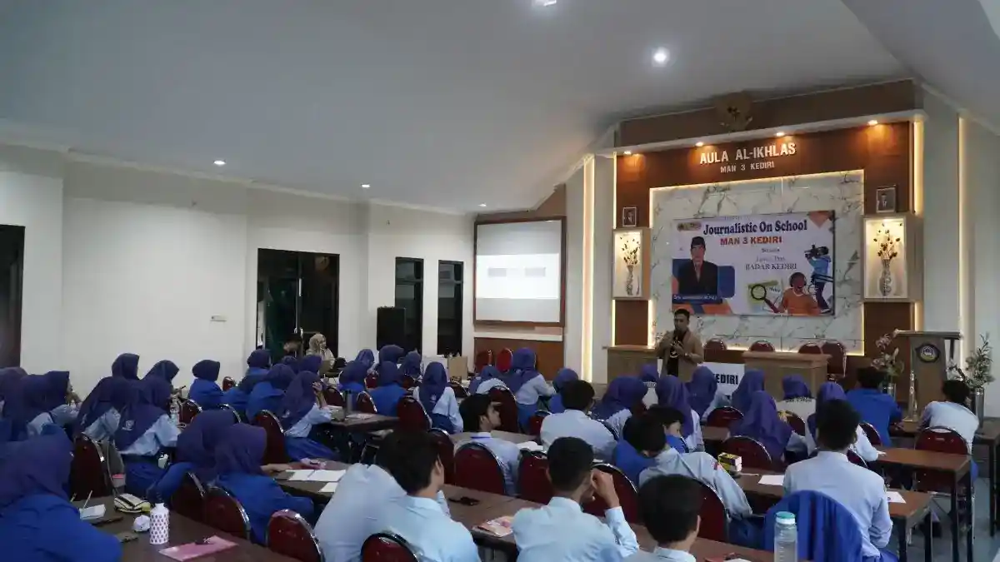
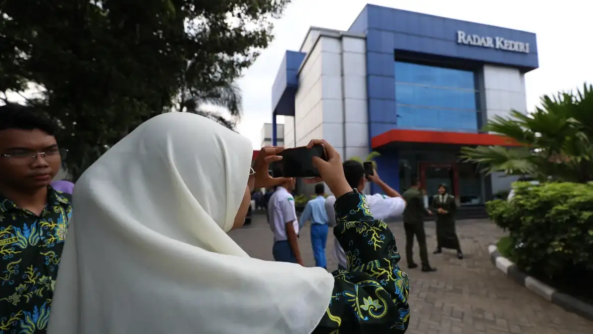

Politics & Government Studies for Students
Program edukasi demokrasi melalui study tour dan dialog interaktif langsung dengan pimpinan lembaga pemerintahan maupun wakil rakyat untuk memperluas wawasan birokrasi pelajar.

Program Politics & Government Studies
Politics and Government Studies for Students adalah program study tour edukatif yang memfasilitasi pelajar untuk berdialog dan berdiskusi langsung dengan pimpinan lembaga pemerintahan daerah maupun anggota Dewan Perwakilan Rakyat Daerah (DPRD). Kegiatan ini bertujuan untuk mengenalkan sistem ketatanegaraan, birokrasi, dan kehidupan demokrasi secara nyata kepada generasi muda.
Melalui program ini, siswa tidak hanya belajar dari buku teks, tetapi bisa melihat langsung bagaimana para birokrat dan wakil rakyat bekerja merumuskan kebijakan, menangani pelayanan publik, dan memecahkan masalah daerah. Peserta juga diberikan kesempatan untuk menyimulasikan diri sebagai pemimpin atau anggota dewan dalam diskusi panel yang interaktif.
Bagi institusi pendidikan, kegiatan ini menjadi nilai tambah yang strategis. Sekolah dapat membangun citra sebagai lembaga yang peduli terhadap pendidikan politik kebangsaan dan nilai demokrasi Pancasila. Terlebih lagi, kegiatan akan dipublikasikan secara profesional melalui jaringan media Jawa Pos Radar Kediri untuk meningkatkan reputasi sekolah secara efektif dan akuntabel.
Manfaat Mengikuti Program
- Siswa memahami cara kerja lembaga eksekutif (pemerintah) dan legislatif (DPRD)
- Membangun wawasan demokrasi, keberanian berpendapat, dan public speaking
- Pengalaman langsung berdialog dengan kepala daerah atau anggota dewan
- Menjadi sarana pembelajaran langsung (outing class) untuk mata pelajaran PKn
- Sekolah mendapat publikasi media massa untuk memperkuat branding dan reputasi
- Memperluas jaringan kerja sama sekolah dengan instansi pemerintahan daerah
Susunan Acara (contoh kunjungan setengah hari)
Keberangkatan & Persiapan
Peserta berkumpul di sekolah, briefing tata tertib, dan menuju instansi tujuan
Penyambutan Protokoler
Tiba di kantor Pemda / DPRD, penyambutan oleh staf humas dan protokoler
Dialog Interaktif Pemerintahan
Audiensi dan tanya jawab langsung dengan pimpinan instansi / anggota dewan
Office Tour & Observasi Ruang Sidang
Melihat langsung ruang kerja birokrasi, pelayanan publik, atau simulasi di ruang paripurna DPRD
Penyerahan Cinderamata & Dokumentasi
Serah terima plakat dari sekolah ke instansi, sesi foto bersama untuk publikasi
Penutupan & Kepulangan
Peserta meninggalkan lokasi kegiatan untuk kembali ke sekolah
Event Gallery
Dokumentasi program Politics & Government Studies — mempertemukan gagasan generasi muda dengan para pemangku kebijakan daerah.

{kind=link}
{kind=link}
Fasilitator Program

Tim Radar Kediri
Fasilitator & Publikasi Media
Info koordinasi & perizinan, hubungi:
officialrkinstitute@gmail.com
+62 831-9800-2246
Lokasi Kegiatan
Kegiatan dilaksanakan langsung di pusat pemerintahan, kantor dewan, atau institusi negara lainnya untuk memberikan pengalaman empiris yang nyata.
Kantor Instansi Pemerintahan / DPRD

Radar Kediri Institute membantu menjembatani komunikasi, perizinan, dan penjadwalan antara pihak sekolah dengan institusi pemerintahan. Tempat kegiatan biasanya berada di ruang rapat utama, ruang paripurna DPRD, atau aula kantor pemerintahan dengan standar keprotokolan yang resmi.
Fasilitas Layanan
- Pengurusan perizinan dan surat resmi
- Koordinasi jadwal dengan narasumber pejabat
- Fasilitator dan MC pendamping kegiatan
- Skenario dialog dan simulasi ruang sidang
- Dokumentasi foto dan video jurnalistik
- Publikasi pemberitaan di media Radar Kediri
Pertanyaan Sering Diajukan
Temukan jawaban atas pertanyaan umum seputar program Politics & Government Studies for Students.